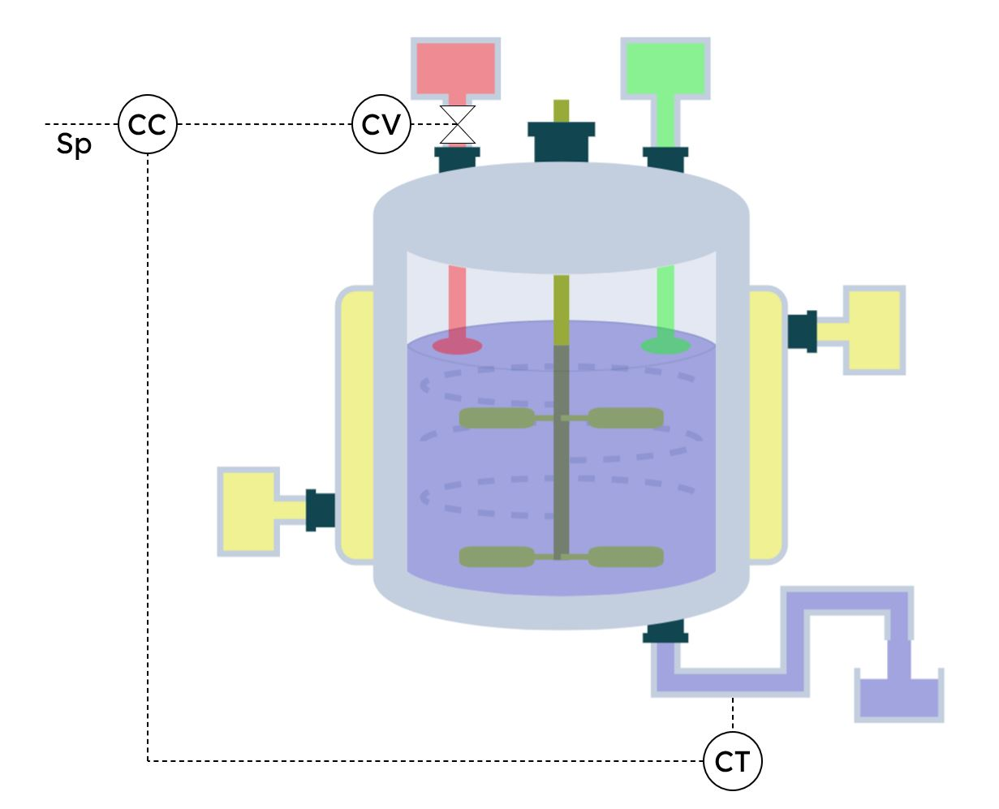

Nesta aula usaremos o reator que construímos e desenvolveremos para ele uma malha de controle.
Essa é uma aula bônus para a visualização de uma aplicação direta da compreensão do modelo de um reator!
O objetivo dessa malha será controlar a concentração do produto C na saída do reator. Veja:
Essa é uma aula bônus para a visualização de uma aplicação direta da compreensão do modelo de um reator!
O objetivo dessa malha será controlar a concentração do produto C na saída do reator. Veja:

Elementos da malha:
-
\(CV\to\) Válvula de controle de concentração (manipula a vazão de A na entrada do reator).
-
\(CC\to\) Controlador de concentração (controla a concentração de C na saída do reator).
-
\(CT\to\) Medidor e transmissor de sinal de concentração (mede a concentração de C na saída do reator e a transmite para o controlador).
Nessa malha simples, iremos medir a concentração de C na saída usando o medidor e transmissor CT, transmití-la para o controlador de concentração CC que manipulará a válvula de controle de concentração CV.
Pontos importantes:
-
Manipularemos \(F_{a0}\) para controlar \(C_{c}\)
-
A vazão \(F_{a0}\) é limitada de 0 a 10 \(\frac{mol}{s}\)
-
\(Sp\to\) Setpoint do controlador, ou seja, o valor alvo para nosso controle de \(C_{c}\)
-
A malha de controle não está sendo exibida na simulação por questões estéticas
Altere os parâmetros \(K_{C}\), \(\tau_{i}\) e \(\tau_{d}\) para ativar o controlador. Altere livremente o valor de \(Sp\) e \(F_{b0}\) com os sliders.